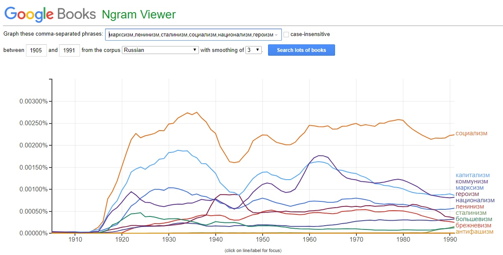
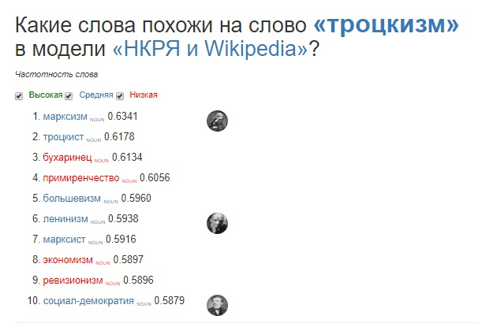
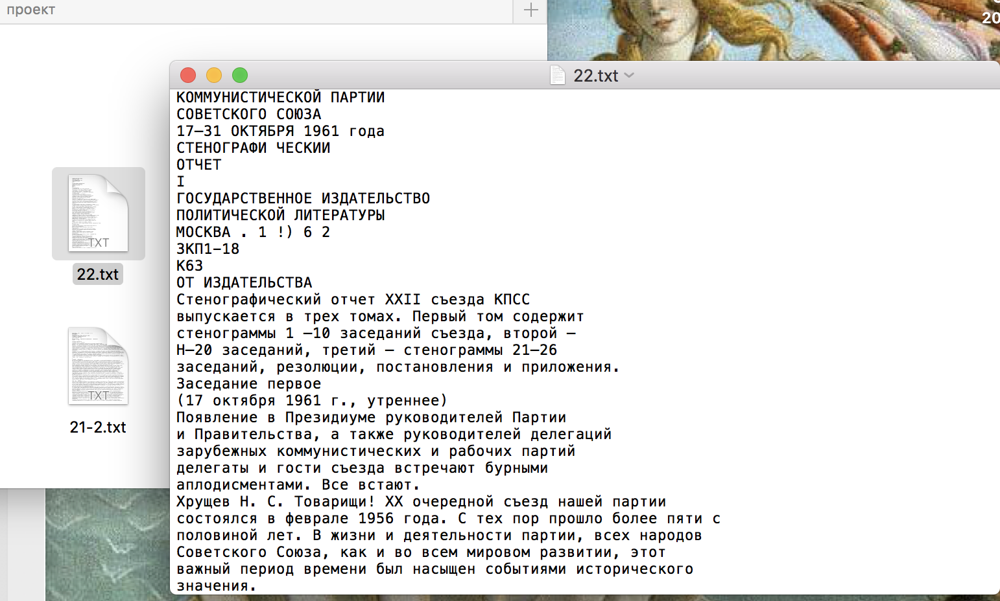
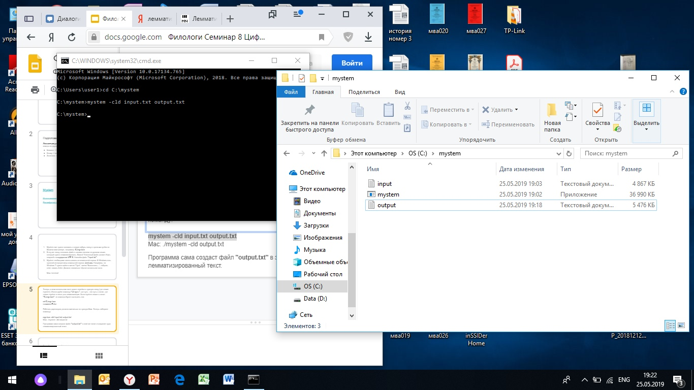
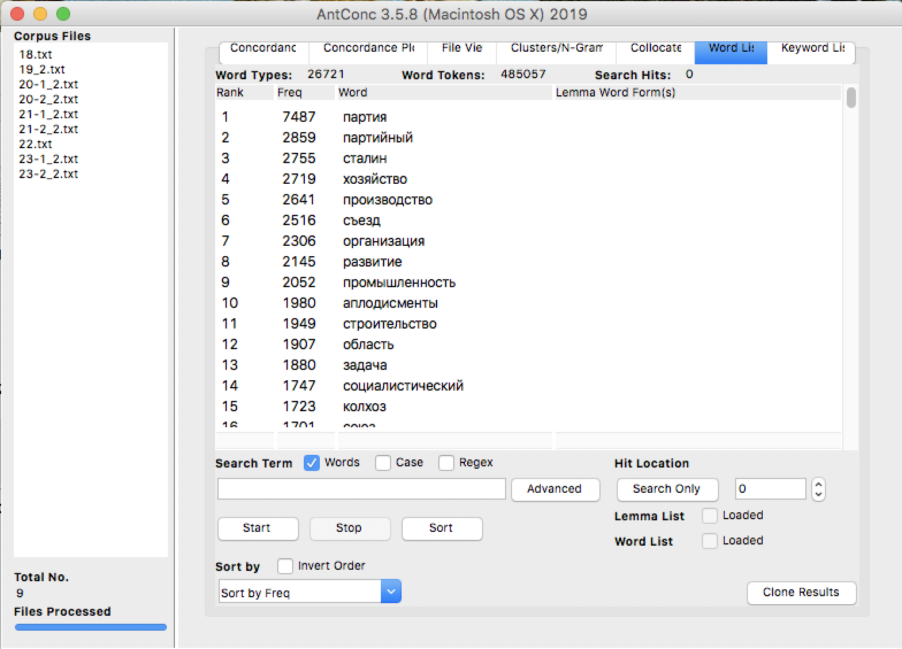
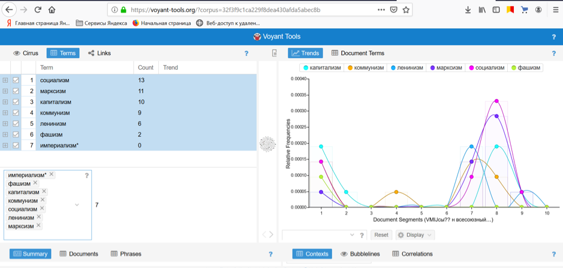

Наш проект посвящен функционированию слов с суффиксом "-изм-" на материалах докладов съездов ЦК КПСС 1939-1966х гг. Мы решили взять именно этот суффикс, потому что ключевые понятия советсой идеологии имеют именно его.
Перед началом составления и анализа корпуса мы рассмотрели частоту употребления этих слов на протяжении всего советского периода. Выбранный нами временной промежуток, кажется особо интересным в рамках советской истории. Мы хотели посмотреть, как использовались слова с -измами, изменялись их значения и употребление в достаточно напряженное для СССР время : в ходе Второй мировой войны и первые годы послесталинского периода. Чтобы посмотреть на общую картину ассоциаций с самыми распространенными "-изм"ми, используем программу "Rusvectores" и в результате подтверждается догадка о том, что все "-изм"ы связаны и вписаны в общий контекст, который мы и рассмотрим. Как видно по графам из НКРЯ и Ngrams, в расматриваемый нами период не был обнаружен пик употребления какого-либо из этих слов.

Выявление периода с наиболее частоным употреблением

Мы использовали собранные данные для создания корпуса текстов. Затем мы преобразовали его в формат тхт, чтобы лемматизировать тектсы в Mystem. После мы загрузили корпус и стоп-слова в AntConc, там мы провели работу с ворд-листом и сделали collacates c ограничением частоты в 30 и отсортированы по признаку stat. Их границы - от пяти слов слева до пяти слов справа. Но если коллакэйтс было удобно анализирвать с леммами, то рассматривать контекст было затруднительно. Поэтому мы провели ту же работу с нелемматизированным текстом и с помощью н-грамм проанализировали контекст. Мы пришли к выводу, что слова с -измами употребляются с ярко окрашенной стилиистически лексикой, и уже с использованием контекста в три-пять слов видно коннотацию употребленных слов.



Четвертый этап : Работа с Voyant Tools
Затем мы использовали Voyant Tools, чтобы проследить количество и плотность употреблений главных "-изм-"ов. Мы проанализировали как каждый текст в отдельности, так и, создав общий документ из всех материалов, проанализировали его. Таким образом, мы обнаружили в какой из периодов какие "-измы-" употреблялись чаще, это помогло выделить ключевые слова для определенного периода.
Определение частотности и плотности употребления «-изм-»ов в отдельных материалах, например, вот так
